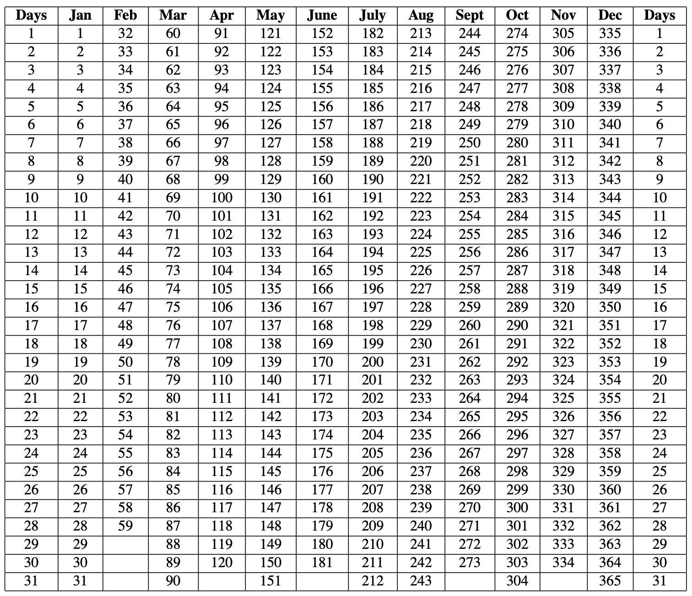
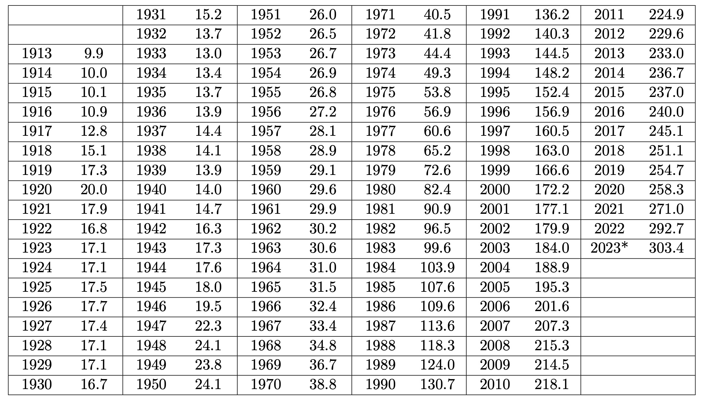

9 Simple Interest
9.1 Intro to Simple Interest
If you lend someone $5000 today and that person pays you back in 1 year, you probably want them to pay you more than $ 5000 (say, $ 5,500). Borrowing money is not free. We use the term Present value (abbreviated as \(P\)) to refer to the value of money at the moment and Future Value (abbreviated as \(F\)) to refer to the value of the money at a future date.
We use the term Interest (abbreviated as \(I\)) to refer to the difference between the future value and the present value. You can think of interest as the value gained by the present value over a time period, \(t\). In other words, interest is the difference between the future value and the present value of the money.
\[I=F-P\]
If the person to whom you lend the money keeps it for two years instead of one, what would be the interest? What if they keep it for 10 years? Well, this will depend on the terms of payment that the two of you agree on. assuming you agree on a flat rate or $500 every year, they would pay a total interest of \((10\times500=\$5000)\) if they keep the money for ten years and $1000 for two years.
The term interest rate refers to the proportion (percentage) of a loan that is charged as interest to the borrower. Interest rates are typically expressed as an annual percentage of the amount borrowed. For example, in the above scenario, the interest rate would be \[\frac{500}{5000} \times 100=10\%\] This means that \(10\%\) of the present value \((0.1\times5000=500)\) is paid as interest every year. We usually use the letter \(r\) to denote interest rate. Thus, for an interest rate of \(r\), a present value \(P\) and time \(t\) years, one should expect to pay an interest of \(P\times r \times t=Prt\).
\[I=Prt\] where,
\(r=\) annual interest rate
\(P=\) Present value or principal
\(t=\) time in years
Note:
- In the above scenario, we use the original fixed amount($,5000) to compute interest for each subsequent year. This type of interest is known as Simple Interest. In some cases, interest is computed by updating the present value on, say a yearly basis, effectively assuming that you are “re-borrowing” every time the principal is updated. For example, you may decide to update the principal to $5,500 in the second year and then charge your friend 10% of $5,500. We will explore this kind of interest in the next chapter.
9.2 Future Value
The future value is the sum of the amount originally borrowed (present value) and the interest that is accrued over time.
\[\begin{align} F&=P+Prt\\ &=P(1+rt) \end{align}\]
where,
\(r=\) annual interest rate
\(P=\) Present value or principle
\(t=\) time in years
\(F=\) Future value after \(t\) years
Example 1
Ethan borrows $2000 at 5% simple interest rate from his bank. How much interest does he pay after 5 years? How much (total amount) does he pay back after five years?
Solution
This is a two part question. First, we need to find the total interest accrued and then the future value.
To compute the total interest, we can use the interest formula given above.
\[\begin{align} Interest&=Prt\\ &=2000 \times 0.05\times 5\\ &=\$1250 \end{align}\]
Note that the rate 5% means \(5\) dollars for every \(100\) or \(0.05\) for every dollar. So, we use \(0.05\) or \(\frac{5}{100}\) in the formula.
For the second part, we can simply add the accrued interest, \(I\), to the amount originally borrowed \((P)\).
\[\begin{align} F&=2000+1250\\ &=2150\\ \end{align}\]
An alternative way to solve the second part is to use the future value formula \(F=P(1+rt)\) where \(P=2000\), \(r=0.05\), and \(t=5\).
Example 2
Megan borrows $7000 at a simple interest rate of 6% from her bank for 8 months. How much interest will Megan pay when the loan matures?
Solution
First, remember that interest rates are given as annual rates. Since Meagan is keeping the money for only 8 months, time, \(t\), will be \(\frac{8}{12}\) years. Thus,
\[\begin{align} Interest&=Prt\\ &=7000 \times 0.06 \times \frac{8}{12}\\ &=\$280 \end{align}\]
9.3 Exercises
Find the interest paid when $150,000 is borrowed at 4.3% (annual interest rate) for 14 weeks. (Note that there are 52 weeks in a year.)
At the beginning of September 2019, Morgan invests $5000 at 4.5%. Find the interest and the future value of the investment 9 months later.
A quick check-cashing agent is willing to pay you $500 now but wait to deposit your $500 check for 2 weeks. For this service, she charges you $30. Find the annual interest rate of this loan.
If you hope to double your money and you have $1000 to invest at 6% interest, how long will it take you? What if you have $7000 and you wish to double you money with this 6% interest investment?
Moa wants to buy a used car. He has $3000 but wants $3500 to spend. He invests his $3000 into an account earning 6% annual simple interest. How long will he need to leave his money in the account to accumulate the $3500 he wants?
You have a $3,345.59 balance on your credit card. The interest rate is 21.95%. If you pay $300 this month, how much of your payment will go toward interest? What will your balance be after your payment (assuming you make no additional charges)?
William requires a loan of $125,000 to start an internet business. He found a loan agent that charges 14% interest. He is not willing to pay more than $1000 per month. Why is this an impossible situation?
At the beginning of 2019, Marci lends her sister, Selma, $1000. Selma pays off the loan five months later with $1050. Find the annual interest rate.
To the nearest month, how long does it take to increase your investment by 50% if you can get 4% on your investment?
If you want to triple your money at 10% simple interest, how long will it take you?
You want to buy a $1100 iPhone in 6 weeks. How much should you invest at 12% simple interest rate to have the money in 6 weeks?
A small auto repair store owner would like to borrow $25,000 from a bank to buy some equipment. The bank will give the owner a discount loan for 3 months at an interest rate of 12%. What maturity value should be used so that the owner could receive $25,000?
A credit card company charges 24.99% interest rate on overdue accounts. How much interest will be owed on $2600 account that is overdue for 41 days?
9.4 Exact and Approximate Time
Consider the following scenario:
While paying off student loans, you notice that the amount of interest you have to pay off each month changes by month. You expect this to go down, since the amount you owe goes down (so there is less money to charge interest on). But some months the amount of interest actually goes up. How is that possible?
It turns out that the above scenario is caused by the fact that some months are longer (have more days) than others. Financial institutions take into consideration the number of days while computing the interest they charge their clients. The number of days can be either approximate or exact.
Approximate time: assumes that every month has 30 days. In order to compute the approximate time that has passed between two calendar dates, count the number of full months in the loan period, and multiply them by 30. Then add in the extra days included in the loan (less than a month) period using exact time.
Exact time: refers to the exact count of number of days that have passed.
Now, how about the number of days in a year? In the world of banking, sometimes they use 360 as the number of days in a year and sometimes they use 365 (you may see this in terms and conditions section for various products such as credit cards). Remember that in the formula for interest \((I=Prt)\), time, \(t\), is expressed in years. When banks convert days to years they will either divide by 360 or by 365. Note that using 360 days in a year benefits the bank because the quantity \(t\) will be higher and thus the interest paid increases.
*Ordinary interest: calculates interest by assuming a total of 360 days in a year. (i.e., this is the denominator of your fraction of a year when calculating time.)
Banker’s Rule says that, when you are calculating the length of a loan on the order of days, you use exact time but with ordinary interest. In other words, you calculate t (the length of the loan) using exact time, but use 360 as the number of days in a year.
Example 3
Find the approximate time (days) between August 29 and December 14
Solution
We have the whole of Sep, Oct, and Nov. Each of those will be assumed to have 30 days (see definition of approximate time above).
Next, we have the 14 days into Dec and the 1 day before the start of Sep for a total of 15. Therefore, the approximate time is \[(3\times 30)+15=105 \text{days}\]
Example 4
Find the exact time (days) between August 29 and December 14
Solution
Left as an exercise.
9.4.1 Exact Time Table
The table below gives the serial numbers for each day of the year. For example, Jan 1 has serial number 1 while Feb 1 has serial number 32. What this means is that you can easily find the exact number of days between two dates by subtracting their serial numbers.

From the table above, Dec 14 is day number 348 of the year. Similarly, Aug 28 is day number 241. So, the exact number of days between these two dates is \[348-241=107.\]
Example 5 Henry borrows $1500 on Aug 3, 2023. If interest is 8.5%, determine the amount that he must repay on Dec 23, 2023. Use the Banker’s Rule.
Solution
First, the question is asking us to find the future value \((F)\). The formula for future value was given as \(F=P(1+rt).\)
We know \(P=1500\) and \(r=\frac{8.5}{100}=0.085\). Since we are using the Banker’s Rule, we have to find the exact time between the given dates but use 360 for converting the days into years. Using the table above, \(Days = 357-215=142.\)
Thus,
\[ \begin{align} F&=P(1+rt)\\ &=1500\left[1+ \left(0.085\times \frac{142}{360}\right)\right]\\ &=\$1550.29 \end{align} \]
Henry must pay $1550.29.
The United States government often raises money by selling short term debt securities known as treasury bills (“T-billS”). A Treasury bill is a note whose future value, \(F\), is as printed, and whose present value, \(P\), is determined by how much one is willing to pay for the note. Treasury bills are usually sold at an auction. For example, if you buy a 1-year $100 T-bill with a bid of 95%, this means that you pay $95 now (present value) to get the note and it will be worth $100 (future value) in 1 year. (See https://www.treasurydirect.gov/)
9.5 Exercises
Find the exact time between January 3rd and September 3rd. (Question - is this always the same number of days?)
Find the approximate time from January 3rd to September 3rd. (Question - is this always the same number of days?)
On June 6th, Jason borrows $15,000 at 7.99%. How much is the interest and what is the payoff on August 15? Does it matter whether or not this is a leap year? (Remember to use Banker’s Rule.)
You borrow $150 from an acquaintance on September 4 who will charge you 12% interest. When you finally get your student employment papers together and get your first paycheck, it is October 31. How much do you need to pay back on this loan?
A 182-day $100,000 Treasury bill is bought with a bid of 97.9%. Find the rate of return (i.e., the interest rate the investor earns.)
On 4/12/23, Barney has $3000 in his savings account, which earns only 2.75%. The next interest date is 10/1/18. If Barney withdraws his money early, he will lose all of the interest on the part withdrawn. On 8/15/23, he needs $1500 to pay for astronaut lessons. He finds a bank that will loan him the money at 9%. Should he get the loan or should he withdraw the money from his savings account and why?
Mario has charges to his student account of $1500 on 12/10/22 and $6000 on 3/15/2023, and the account charges 10% simple interest. If he wants to pay off both of these with a single payment on 7/21/23, how much does he need to pay? (Notice that this is a two step problem!)
Suppose that you have two options for buying a used car: pay $3000 in cash (i.e., immediately) or else wait 6 months and pay $3200. If you are able to earn 18% simple interest on your money, which option is monetarily better for you?
You are treasurer for a local non-profit organization that is in the process of making improvements on its building. The contractor gives you two payment options: either pay $27,500 on 9/6/23, or else $28,500 on 4/3/24. If you calculate that you can get 8% annual interest on your money, which is the better deal?
9.6 Consumer Price Index and Inflation
Watch the following short video about inflation and consumer price index:
Most Americans (and world over) are feeling the effects of inflation. You get the feeling that you can no longer afford the things you did about two years ago. For example, in 2021, a gallon of regular gas went for $3.05 on average but right now, it is going for about $4.00. The cost to mail a first-class letter (one ounce) was $0.33 in 2000 but now it’s $1.06.
While the price of individual items is of some interest, the more important issue is the “cost of living”: how much it costs to pay rent (or make mortgage payments); pay for utilities and insurance; buy groceries, clothing; etc. Economists attempt to measure this with the Consumer Price Index (CPI).
Here’s a rough description of the CPI:
Imagine a “market basket” of all the goods and services that a typical individual needs. Find the cost of these, weight them appropriately (you buy one new pair of shoes each year, a pound of coffee each week, pay your wireless bill once a month [and replace your phone every three years], etc.), and add these costs up. Yes, the Bureau of Labor Statistics does this! By and large, prices are updated on a monthly basis; the market basket is also adjusted over time. (Wireless service was not part of it when the CPI was first developed, for example.)
The most commonly used CPI, CPI-U, was scaled so that the value over the period 1982–84 was 100. In 2022, the average CPI was 292.66. This says that, by and large, goods that cost $100 in 1984 would cost $292.66 in 2022. Using the CPI allows us to adjust for inflation.
Below is a CPI-U table dating back to 1913. The value for 2023 is the average CPI through September:

A more comprehensive table with month-by-month CPI can be found the BLS website: https://www.usinflationcalculator.com/inflation/consumer-price-index-and-annual-percent-changes-from-1913-to-2008/
One way to use the CPI table above is to compare costs of items at different points in time. This is known as adjusting for inflation and can be done using the formula below:
Where,
\(Dollars(A)=\) Dollars at time A
\(Dollars(B)=\) Dollars at time B
\(CPI(A)=\) CPI at time A
\(CPI(B)=\) CPI at time B
Example 6
The federal minimum wage was $0.25 per hour in 1938. Convert this to 2023 dollars. Has the wage gone up or not?
Solution
\[\begin{align} Dollars(2023)&=CPI(2023) \times \frac{Dollars(1938)}{CPI(1938)}\\ &= 303.4 \times \frac{0.25}{14.1}\\ &=5.38 \end{align}\]The current federal minimum wage is $7.25. Thus, the minimum wage has increased by about $1.87 when you account for inflation.
In example 6 above, 0.25 is the current dollar amount while 5.38 is the Real dollar amount in 2023. Note that the “real dollar” amount is only needed for comparison to another amount, and it should be associated with a specific year date.
9.7 Exercises
Early color televisions came out in 1954 and cost $1295. Convert to today’s dollars.
A wedding band (plain, 14 K white gold) cost $199 in 1981. Similar rings now seem to go for about $350. Has the price gone up, or down?
The National Association of Colleges and Employers (NACE) reports that the average starting salary for bachelor’s degree graduates in 1960 was $6,084. Convert this to 2023 dollars.
IC tuition was $43,978 in 2018–2019. In real dollars, has the price gone up? By how much?
In 1969, a pair of jeans cost $4.95. Convert this to today’s dollars.
One exception to the price-rising phenomenon involves new-to-market items; as technology evolves, their real prices (i.e., adjusted for inflation) may decrease. For example, when the CD player first came out (Sony, Oct. 1962), it retailed for $674. How much is this in current dollars?
Back in 1973–1974, an OPEC (Organization of Petroleum Exporting Countries) embargo caused the price of gasoline in the US to go from 38 cents per gallon to a (then-outrageous) 84 cents per gallon. I paid $3.89 per gallon recently when I filled up. Convert $3.89 to 1974 prices.
9.8 Equations Of Value
Would you rather have $ 1,000 today or $ 1,100 in December?
This problem is more complicated than merely comparing the two amounts. The golden rule of finance states that monies cannot be added or reconciled unless they are valued at the same point in time. Therefore, it might make sense to do one of the following before you can make a decision (of course many other factors that may influence your decision):
- Compute the future value of $ 1,000 (you will need to know the interest rate) and then compare it with $1,100 OR
- Use $1100 as the future value and compute the present value then compare it with $1,000.
Focal Date: The focal date is the date to which monies are moved in order to be reconciled (added, subtracted, etc).
- In order to move monies to a given focal date, you will need to know the interest rate at which money is valued.
- We ignore the effects of inflation in this section and focus only on how available interest rates affect comparisons.
Example 7
You are probably aware that paying a debt early may save you money. Suppose, you owe $3,000 due on Dec 30, 2023. If you decide to pay off this debt early, say Nov, 12, 2023), how much will you pay on Nov, 12, 2023? Assume that money is valued at 5.99% simple interest rate and that there is no penalty for early payment. Use the Banker’s Rule.
Solution
Note: The $3,000 is due in future so it is a future value. It already has the interest built in. Paying off early means you should pay less than $3,000.
To solve the problem, you first need to identify the focal date. In this case, the focal date is Nov, 12, 2023.
To determine how much will be paid on Nov, 12, 2023 to clear the debt, we first compute the exact number of days between 11/12/23 and 12/30/23 using the exact time table given earlier:
\(Days=364-316=48\)
This means you save 48 days worth of interest. This is equivalent to moving the money back 48 days from 12/30/23.
\[\begin{align} F&= P(1+rt) \\ 3000&= P\left[1+\left(\frac{5.99}{100} \times \frac{48}{360}\right)\right]\\ 3000&=P \times 1.007966666\\ P&=2976.23 \end{align}\]Things to note about example 7:
You end up paying less than $3,000 because you are paying early. In this case you are saving about $23.77. The earlier you pay the more you save.
If you pay after the due date (i.e., 12/30/23), you expect to pay more than $3,000. In this case, you will compute \(F\) instead of \(P\). Furthermore, most institutions charge a late payment fee which you have to add the computed future value.
Example 8
Suppose in example 8 you pay $1,800 on 11/12/203 instead of the full amount owed. How much do you still owe?
Solution
An easy way is to think of the early payment ($1,800) as an investment that earns interest. The question is, what will be the future value of this “investment” on 12/30/23 at an interest rate of 5.99%?
\[\begin{align} F&= P(1+rt)\\ &= 1200\left[1+\left(\frac{5.99}{100} \times \frac{48}{360}\right)\right]\\ &=1800\times 1.007966666\\ &=1814.34 \end{align}\]To find the amount you still owe on 12/30/23, you subtract $1,814.34 from $3,000 to get $ 1,185.66.
9.9 Exercises
On June 2, 2024, you will be required to pay $4500. On March 2, 2024, you decide to pay off the debt. What is your pay off amount? Assume money is worth 6.99%.
Your student account shows that you owe $700 due at the end of the semester, on December 15. Assume that the account values money at 6%. If you make an early payment of $450 on October 21, how much will you owe still on December 15?
Noreen has figured that her tax obligation for self-employment on 2/15/24 will be about $5,800. She makes a $1500 payment on 8/15/23 and another $1600 payment on 11/15/23. What will she still owe on 2/15/24 if money is worth 3.5%? (Use approximate time)
Morgan owes $2000 due in 1 year and $3000 due in 5 years. What is her cash equivalent (i.e., payoff amount) of these two amounts at 3.5%? (Notice that this implies using today as the focal date.)
Suppose you owe $2,491.59 on 12/21/23 and you make a payment of $1500 on 10/21/23. How much do you still owe on 12/21/23?
Suppose in problem 5 above you off the debt on 02/20/2024 and that the company charges a late payment fee of $2.99 per day. How much will you pay on 02/20/2024?
Eli pays $500 for his dog, Fido, on 6/1/23 and agrees to make three equal payments on 12/1/23, 6/1/24, and 12/1/24. If the breeder charges 8% for credit, find the amount of each of the three payments. Put the focal date at 12/1/24.